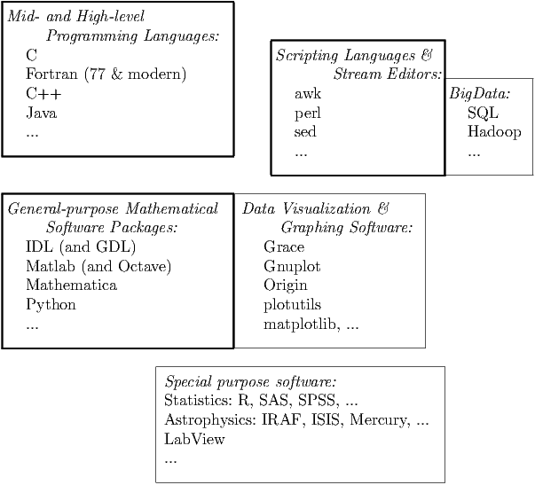

Almost any programming language one is familiar with can be used for computational work (despite the fact that some people believe strongly that their own favorite programming language is superior to all other languages). Figure 4.1 categorizes programming language from the perspective of scientific computing.

High-level programming languages received their name because they spare the programmer many details of what is happening in the CPU, which is described by low-level machine code. From a modern point of view, “high level” languages require relatively detailed instructions, and are flanked by “very high level languages”.
C and Fortran, for example, are well suited for intensive scientific computing. Both languages are fast in execution, quick to program, and widely known. There exist large program repositories and excellent compilers for them.
C is the common tongue of programmers and computer scientists. Modern C includes intrinsic complex arithmetic, which was absent from early C standards. C++ is a much larger and more complex language than C. And C is a subset of C++. C++ becomes advantageous when code gets large and needs to be maintained.
Fortran is a programming language tailored to the needs of scientists and engineers and as such it continues to be particularly well suited for this purpose. Modern Fortran (Fortran 90 and later versions) greatly extends the capabilities of earlier Fortran standards. A major advantage of Fortran are its parallel computing abilities. Fortran 77, compared to Fortran 90, lacks dynamic memory allocation, that is, the size of an array cannot be changed while the program is executing. Because of its simplicity and age, compiler optimization for Fortran 77 is probably the best available for any language.
Python is versatile and enables programmers to write code in less time, which makes it highly suited for scientific programming, but Python code tends to be slow. The appropriate saying is that “Python for comfort, Fortran for speed.”
If you know one high-level language, you can quickly understand another and switch between the two. Table 4.1 shows a program in C and in Fortran that demonstrates similarities between the two languages.
/* C program example */
#include <math.h> #include <stdio.h> void main() { int i; const int N=64; float b,a[N]; b=-2.; for(i=0;i<N;i++) { a[i]=sin(i/2.); if (a[i]>b) b=a[i]; } b=pow(b,5.); b=b/N; printf("%f\n",b); }
|
! Fortran program example
program demo implicit none integer i integer,parameter :: N=64 real b,a(N) b=-2. do i=1,N a(i)=sin((i-1)/2.) if (a(i)>b) b=a(i) enddo b=b**5; b=b/N print *,b end
|
The following features are not analogous: C is case-sensitive, Fortran is not. Array indices begin by default with 0 for C and with 1 for Fortran. Fortran output lines automatically end with a line break, not so in C.
Recommended Reading: The best reference book on C is Kernighan & Ritchie, The C Programming Language, although as an introductory book it is challenging. A concise but complete coverage of Fortran is given by Metcalf, Reid & Cohen, Modern Fortran Explained. There is also abundant instructional and reference material online.
Program code can be made executable by interpreters, compilers, or a combination of both. Interpreters read and immediately execute the source program line by line. Compilers process the entire program before it is executed, which permits better checking and speed optimization. Language implementations that can be compiled hence execute much faster than interpreted ones. Just-in-time compilers perform compilation while the program is executing (e.g. Java). (A fourth but rare possibility are source-to-source translators that convert the language statements into those of another.)
Fortran and Matlab are examples of languages that allow vectorized or index-free notation. An operation is applied to every element of an entire array, for example A(:)=B(:)+1. This not only saves the work of writing a loop command, but also makes it obvious (to the compiler) that the task can be parallelized. With explicit loops the compiler first needs to determine whether or not the commands within the loop are independent from one another.
Some languages, such as Fortran and Python, allow unformatted output that does not truncate the internal binary representation. Unformatted output exactly preserves the internal accuracy of numbers. (Compare C’s printf("%f\n",2.1); with Fortran’s print *,2.1).
Common implementations of Java and Python are built on an intermediate layer, a Virtual Machine, which enhances portability but inhibits computational performance.
Many general-purpose text editors, such as Emacs, vi, and BBEdit, support programming with auto-indent, syntax coloring, highlighting of matching pairs of braces, and other helpful features.
There are ready-made software packages for numerical calculations. Many tasks that would otherwise require lengthy programs can be accomplished with a few keystrokes. For instance, it only takes one command to find a root, say FindRoot[sin(3 x)==x,{x,1}] (in Mathematica notation). The command searches for a solution to the equation beginning with x = 1. Inverting a matrix reduces to Inverse[A] (in Mathematica) or 1/A (in Matlab). They have many intrinsic functions. Such software tools have become so convenient and powerful that they are the preferred choice for many computational problems.
Table 4.2 shows the example program above in two popular applications. These programs are considerably shorter than those in Table 4.1 and do not require variables to be declared.
% Matlab program example
N=64; i=[0:N-1]; a=sin(i/2); b=max(a); b^5/N
|
; IDL program example
N=64 a=FLTARR(N) FOR i=0,N-1 DO a(i)=sin(i/2) b=MAX(a) PRINT, b^5/N
|
Programs can be written for such software packages in their own application-specific language. Often these do not achieve the speed possible with languages like Fortran or C. One reason for that is the trade-off between universality and efficiency—a general method is not going to be the fastest. Further, we typically do not have access to the source codes to adjust them. Another reason is that, although individual commands may be highly efficient computationally, a succession of commands is interpreted and hence slow.
□ Major general-purpose mathematical software packages that are currently popular: Mathematica began as a symbolic computation package, which is still is its comparative strength. Matlab is particularly strong in linear algebra tasks; its name is an abbreviation of Matrix Laboratory. Octave is open-source software that mimics Matlab. IDL (Interactive Data Language) began as a visualization and data analysis package. Its syntax defines the Gnu Data Language (GDL). All of these software packages offer a wide range of numerical and graphical capabilities.
As an additional example, here is a Python implementation of the program example shown in Tables 4.1 and 4.2:
(It is amusing that in the five language examples above, each uses a different symbol to indicate a comment line.)
Graphics is an indispensable tool for data analysis, program testing, and scientific inquiry. We only want to avoid spending too much time on learning and coping with graphics software. Often, data analysis is exploratory. It is thus desirable to be able to produce a graph quickly and with ease. Simple graphics software can go a long way.
□ Gnuplot is a simple and free graphics plotting program, http://www.gnuplot.info. It is quick to use and learn. A single command suffices to load and plot data. For example, plot 'stuff.dat' u 1:3 w lp plots column 3 versus column 1 and uses lines and points in the graph. Another, similar tool is Grace, also freely available. Origin is one of many widely used proprietary software packages. All general-purpose math packages listed above have powerful graphing and visualization capabilities.
Choosing a programming language: Whether it is better to use a ready-made mathematical software package or write a program in a lower level language like C or Fortran depends on the task to be solved. Each has its domain of applicability. A single language or tool will be able to deal with a wide range of tasks, if needed, but will be inefficient or cumbersome for some of them. To be able to efficiently deal with a wide range of computational problems, it is advantageous to know several languages or tools from different parts of the spectrum (bold boxes in Fig. 4.1): One high-level programming language for time-intensive number-crunching tasks, one general-purpose software for every-day calculations and data visualization, and a few small tools for data analysis. This enables a scientist to choose a tool appropriate for the given task. Knowing multiple languages from the same category provides only a marginal advantage and increases the chance for confusing syntax.